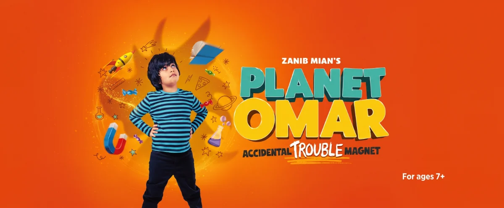

Our Family Verdict
Brought to life from page to stage, Planet Omar – Accidental Trouble Magnet is based on the first of Zanib Mian’s bestselling Planet Omar series of books.
The stage show is adapted by Asif Khan and directed by Sameena Hussain and this charming family production is suitable for children aged 7+.
Step into the fantastically imaginative and chaotic world of Omar – an 8-year-old British-Pakistani Muslim boy with a wild imagination, a big heart and a knack for getting into trouble.
When Omar's family moves to a new neighbourhood, he faces a new school, an unfriendly neighbour and a bully who makes every day feel like a battle. With help from his family, best friend Charlie and a very friendly dragon, Omar discovers that his imagination is his greatest strength.
Omar, played by Justin Kendal-Sadiq, is a trouble magnet, with ideas bursting out of his 8-year-old brain. With an imagination constantly overflowing, giant pieces of cheese, walking food and dreams spring to life throughout this joyful and vibrant adventure.
MATURE THEMES SENSORY NOTES
The show introduces a number of important themes for children to begin to understand and discuss, including racism, stereotypes, religious festivals, bullying and home life. Omar often feels anxious but struggles to express how he feels to the adults he trusts, giving children valuable talking points around worries, change and fitting in.
As a non-Muslim audience member, the show provides helpful explanations of key religious traditions and meanings. Through Omar explaining things to his friends and neighbour, the audience can learn a great deal about Muslim beliefs and practices, while also seeing first-hand the impact language and stereotypes can have on families.
The show is a heart-warming insight into Muslim family life and the production sensitively explores the prejudices faced by many Muslim families. The worry that Muslims will have to "go home" plays constantly on Omar's young mind. References to Muslim women looking like letterboxes and bank robbers provide an important opportunity for the characters to discuss language and labels.
Racist language, although limited in this children's production, was jarring to hear coming from the mouths of children. It serves as a stark reminder that children listen and often repeat what the adults around them say.
Omar's mother is exceptionally graceful in her attempts to befriend a frosty neighbour and in her response to racial slurs repeated in her home. She portrays a composed and admirable role model throughout.
The story moves well between children's everyday problems, a school bully and the fear of starting a new school, taking exams and fitting in. Visually, the colourful scenery transitions effortlessly between home, school and mosques. I particularly liked the use of the walls closing in to portray how the children felt crowded and crushed on the London Tube.
Set and costume designer Nikki Charlesworth has created enchanting puppets, which provide plenty of humour throughout the production. A great use of puppetry brings to life giant cheese, a pain au chocolat, a dragon and Omar's adorable toddler sibling, who provided a laugh-out-loud moment when armed with a whistle, burst into action during a quiet moment – something I'm certain every mother, regardless of religion, could relate to.
The small cast of six never stop. Each actor portrays multiple characters, puppeteering various creations and seamlessly moving scenery, ensuring the fast paced and high energy show runs smoothly throughout.
Packed full of fun, Planet Omar is the perfect adventure for youngsters while also offering meaningful conversations for families to continue long after the curtain falls.
Production Gallery
Sensory Strategies & Parent Insights
Running Time: 1 hour 30 minutes, including interval.
Pacing & ADHD Strategy: Fast-paced and high energy throughout. The small ensemble cast of six seamlessly swaps between multiple characters and dynamically moves scenery, keeping focus sharp and transitions engaging.
Sensory & Sound: Watch out for sudden auditory surprises—the toddler puppet bursts into action with a loud whistle during a quiet scene.
Visual Staging & Space: Colourful scenery transitions between home, school, and mosques, with dynamic visual effects such as closing walls used to portray feeling crowded on the London Tube.
Puppetry: Engaging, humorous puppetry brings to life a friendly dragon, giant cheese, and walking food.
Content & Dialogue Advisory: Explores racism, Islamophobia, bullying, and anxiety around fitting in. Features jarring moments where children repeat racial slurs heard from adults (including references to women looking like letterboxes/bank robbers), handled sensitively and age-appropriately to prompt family discussions for ages 7+.